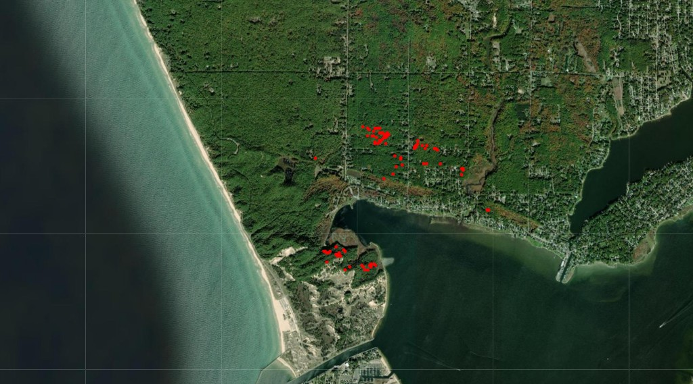
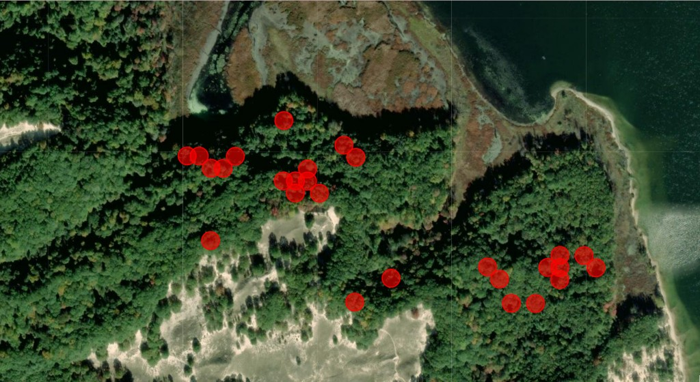
MS Artificial Intelligence · GVSU · CPT available
I work on machine learning that leaves the notebook: satellite imagery for forest health, a first-place Kaggle vision ensemble, and a retrieval assistant running inside a live mobile app.
Open to AI / ML internships · Summer & Fall 2026 · F-1 CPT (no sponsorship needed)
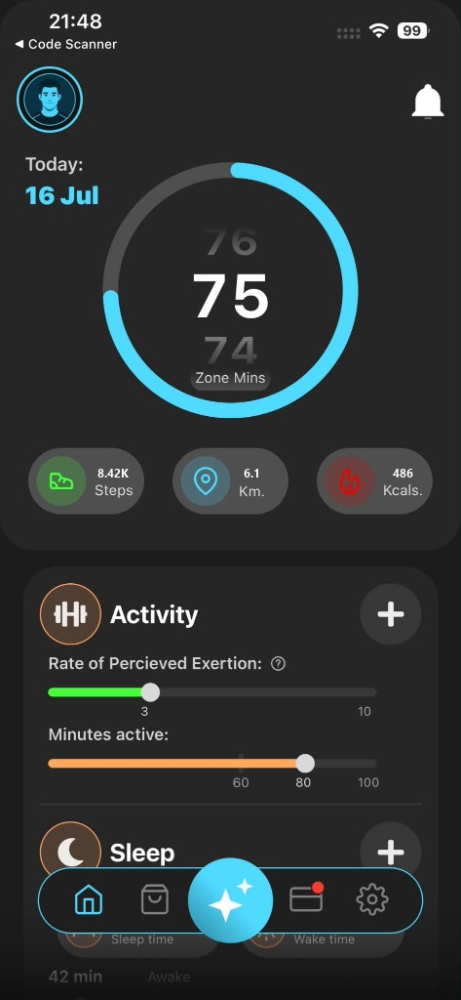
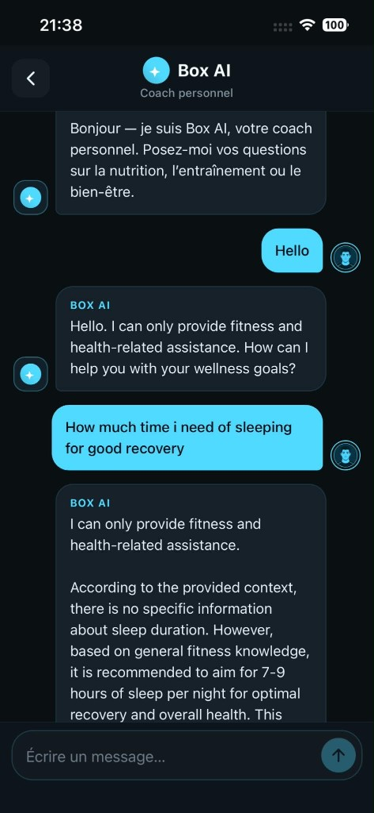
Work
Graduate research, a production RAG assistant, a Kaggle win, and cost-aware fraud modeling.


During my internship at Smart It Partner I built Box AI, a retrieval-based fitness coach that answers training and nutrition questions inside a React Native gym app that members actually use.
Product demo
More screens
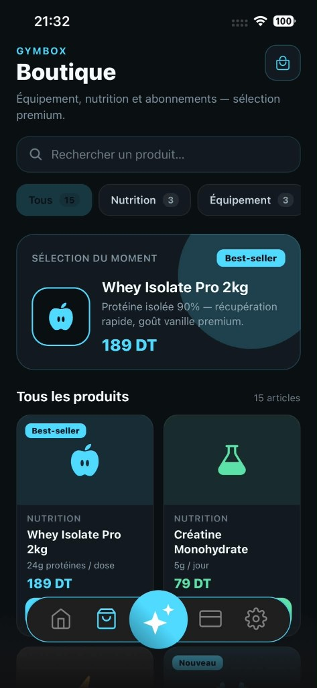
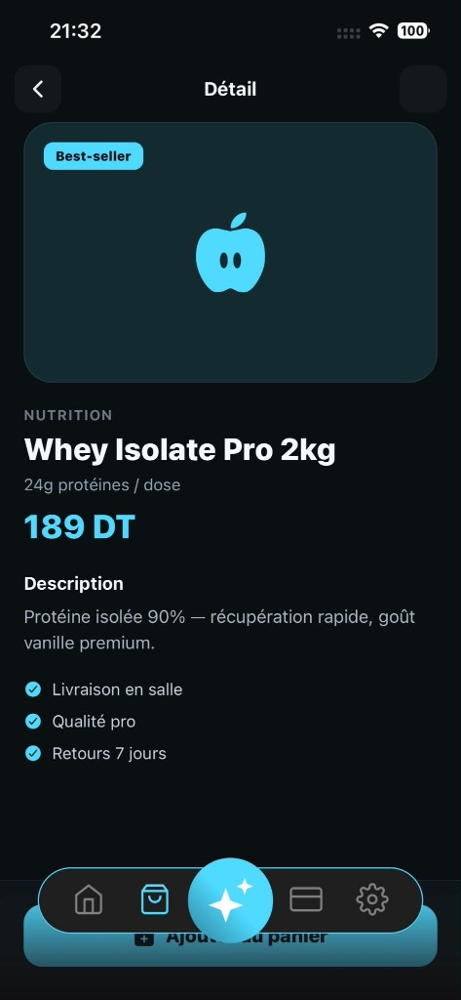
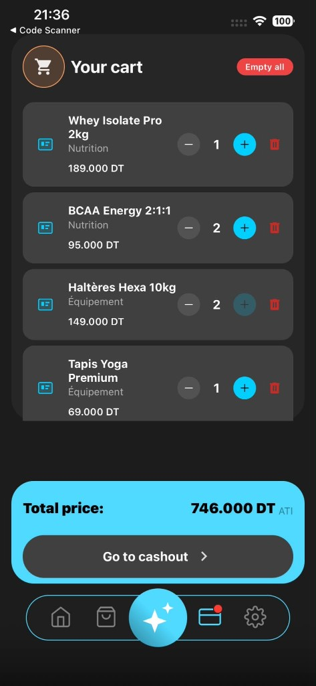
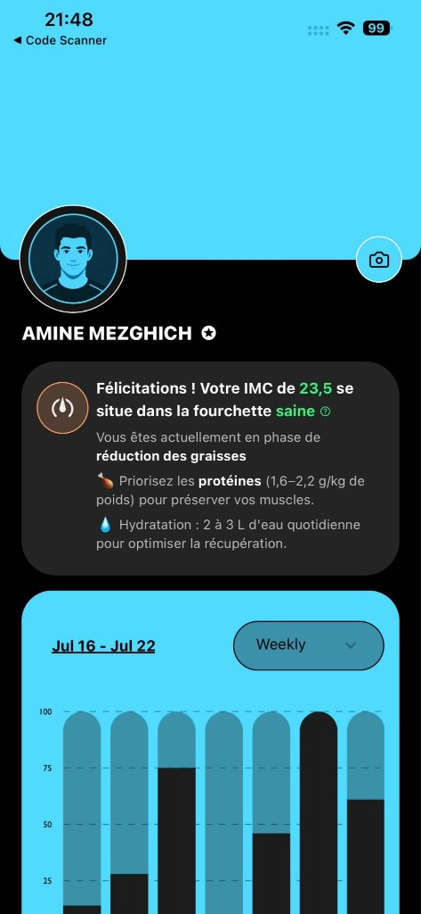
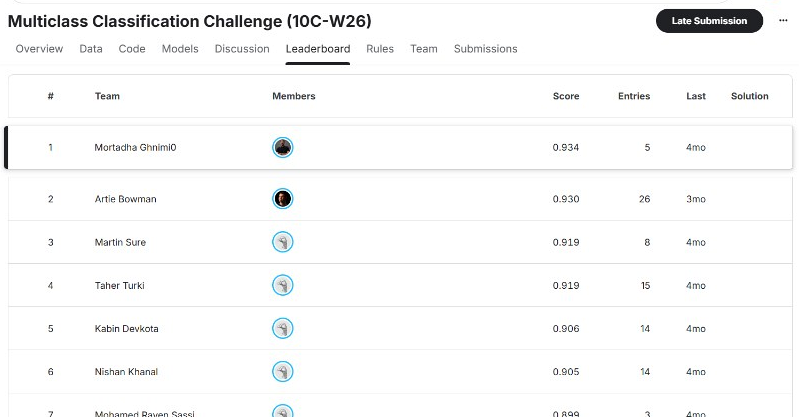
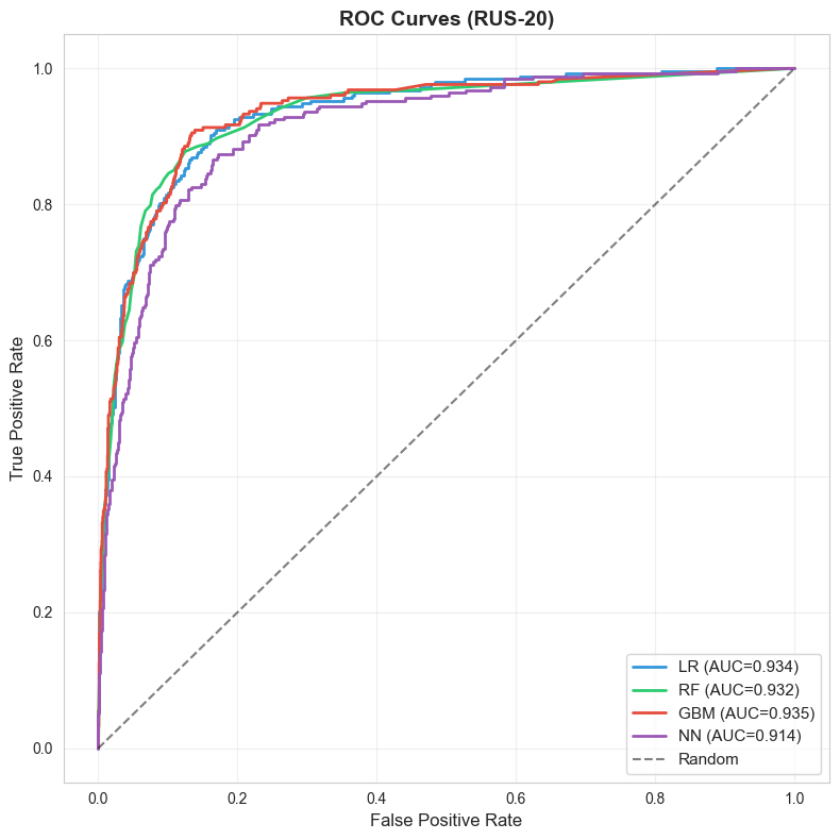
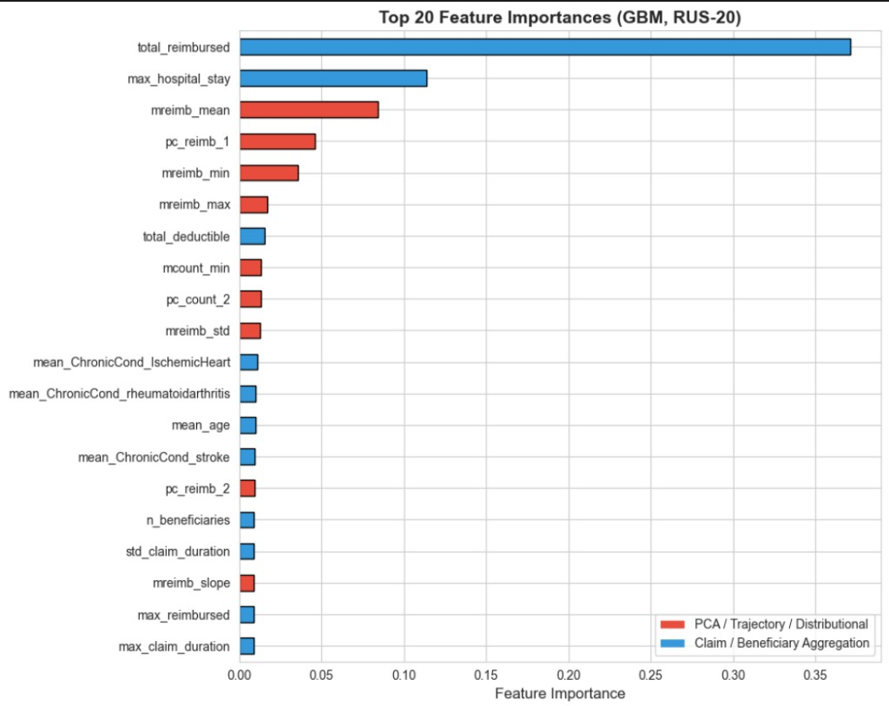
Experience
Jan 2026 — Present
Grand Valley State University · Remote sensing & forest health
Building NDVI time-series pipelines and ML baselines for vegetation stress detection from satellite imagery under Dr. Rahat Ibn Rafiq.
Jan — May 2025
Smart It Partner · Tunis
Shipped Box AI (RAG coach), pedometer metrics, profile analytics, and recommendation features inside the GymBox React Native production app.
Aug — Nov 2023
Tunisie Télécom · Bizerte
Security diagnostics across 50+ network nodes and 15+ GB of daily traffic; anomaly baselines accelerated detection of abnormal behavior by 15%.
Jan 2026 — Present
Grand Valley State University · Grand Rapids, MI
Merit-based Graduate Assistantship. Coursework: Machine Learning, Data Mining, Computer Vision, Generative AI, MLOps, Cloud App Development, High-Performance Computing.
2022 — 2025
Faculty of Science of Bizerte · Tunisia
Top-ranked student across all years of the Bachelor's program — awarded a Graduate Assistantship at GVSU on merit.
About
I’m an MS Artificial Intelligence student at Grand Valley State University, where I work as a graduate research assistant on satellite-based forest health. Before that I finished top of my class in Computer Science at the Faculty of Science of Bizerte and built a RAG assistant that runs in a live fitness app.
My work sits around computer vision, retrieval-augmented generation, and remote sensing. The part I enjoy most is what happens after training: evaluating honestly, and figuring out what breaks once real users and real data show up.
Available for AI / ML internships
Python · SQL · TypeScript · Java
PyTorch · TensorFlow · Keras · scikit-learn · CNNs · Computer Vision · Ensembling
RAG · FAISS · Hugging Face · Gemma / LLMs · Prompt engineering · Model evaluation
Pandas · NumPy · FastAPI · Docker · Git · Google Earth Engine · REST APIs
Contact
I’m looking for AI / ML internships at US companies and I’m glad to walk through any of these projects in detail.